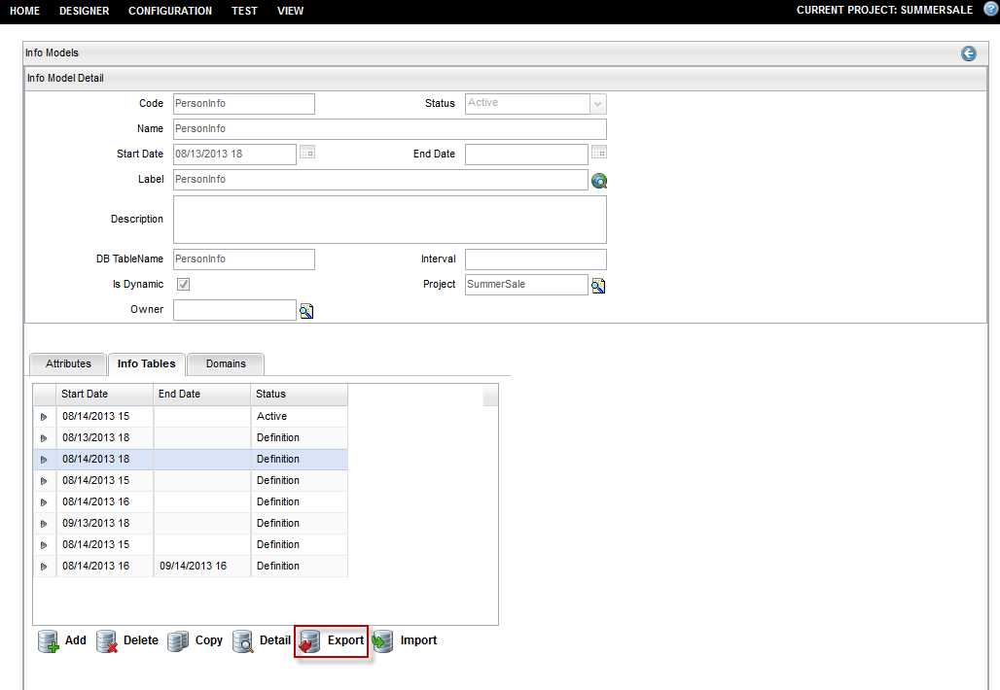
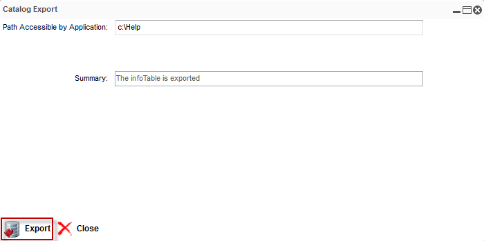

Export an Info Table
To export an info table, follow these steps:
Note: A project must be opened to export an info table.
- On the Info Model Detail dialog, click the Info Tables tab.
- The list of info table details appears; select one from the list (for example, 8/14/2013 18).
- Click the Export button.

- The Catalog Export dialog appears; enter the information in the Path Accessible by Application field (for example, the Help folder on C drive has been selected to save the exported info table).

- Click the Export button; the Summary field appears with the message The infoTable is exported.
Note: By default exportedInfoTable name is given by the system to the exported info table file, and it is saved as .csv file format.
- Click the Close button
to go back to the Info Model Detail dialog.
|